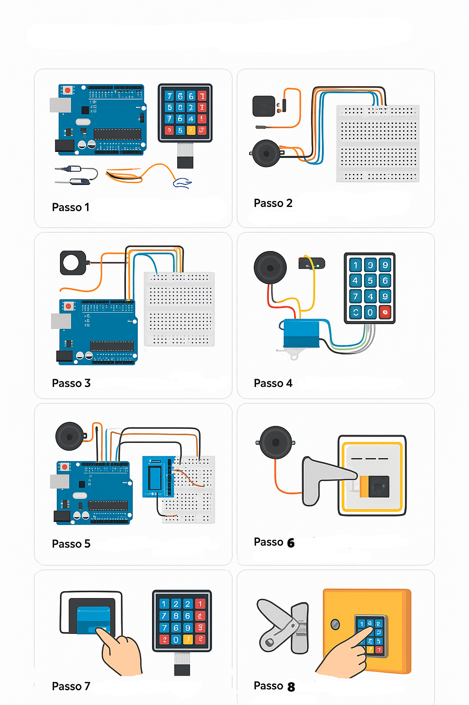

Arduino Uno R3
Microcontrolador que controla todo o sistema, fazendo a leitura do teclado, verificando a senha e acionando buzzer e servo motor.
Teclado 4x4
Utilizado para digitação da senha, funcionando por meio de uma matriz de linhas e colunas.
Buzzer
Emite sinais sonoros ao pressionar teclas e ao indicar senha correta ou incorreta.
Servo Motor
Atua como mecanismo de abertura do cofre, girando ao receber o comando do Arduino.
Passo a Passo da Montagem (resumo em 1 imagem)

Passo 1 — Preparar componentes
Separe: 1x Arduino Uno R3, 1x teclado matricial 4x4, 1x buzzer 5V (módulo KY-012 ou buzzer solto),
1x servo SG90, cabos jumper, protoboard (opcional) e fonte USB (power bank). Verifique integridade.
Passo 2 — Posicionar e alimentar
Coloque o Arduino próximo ao local onde ficará o teclado e o servo. Prepare a fonte (power bank ou cabo USB).
Não ligue até concluir as conexões.
Passo 3 — Conectar o teclado 4x4
Ligue as 8 linhas do teclado aos pinos digitais definidos no código (ex.: ROWS → 9,8,7,6 e COLS → 5,4,3,2).
Use fios firmes e verifique o mapeamento no sketch.
Passo 4 — Conectar o buzzer
Conecte o polo positivo do buzzer a um pino digital (ex.: 10) e o negativo ao GND. O buzzer dará feedback a cada tecla,
e sons diferenciados para sucesso/erro.
Passo 5 — Conectar o servo (mecanismo de trava)
Conecte sinal do servo ao pino PWM (ex.: 11), VCC ao +5V e GND ao GND do Arduino. Garanta que a fonte suporta a corrente.
Passo 6 — Organizar montagem e fixar
Agrupe fios, prenda protoboard e servo na caixa/cofre temporária. Garanta folga mecânica do servo para abrir a trava.
Passo 7 — Upload do código e teste inicial
Conecte ao PC, abra a IDE Arduino, selecione placa e porta e faça upload do sketch. Teste pressionando teclas:
um bip curto a cada tecla; digite senha e pressione "#" para confirmar.
Passo 8 — Calibração e montagem final
Ajuste ângulos do servo (fechado/aberto) no código, ajuste tempos (quanto tempo permanece aberto) e teste várias vezes.
Faça testes reais após fixar tudo no cofre; documente a senha final e as configurações.
Calibração rápida e dicas
Ajuste lockServo.write(0) e lockServo.write(90) para ângulos que permitam a trava abrir/fechar sem esforço.
Se o servo tremular, aumente a alimentação (use power bank com boa corrente) ou adicione condensador entre 5V e GND.
Modifique senhaCorreta antes de usar no cofre final.
Documente a posição final do servo, pinos usados e versão do código para replicação.
Solução de problemas comuns
Sem bip ao pressionar: verifique buzzer e pino no código.
Servo não gira: confira alimentação e se o pino está correto; teste servo isoladamente.
Teclas não respondem: verifique conexão das linhas/colunas do keypad e os pinos em rowPins/colPins.
Comportamento errático: cheque conexões, evite fios soltos e aumente delay entre leituras se necessário.